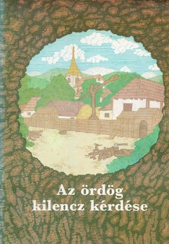
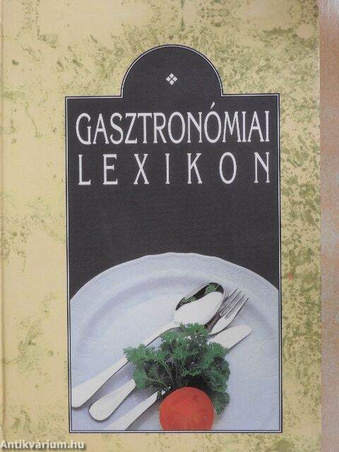
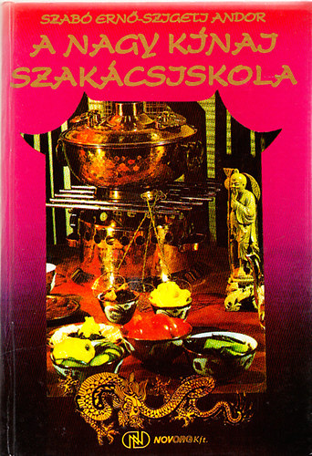
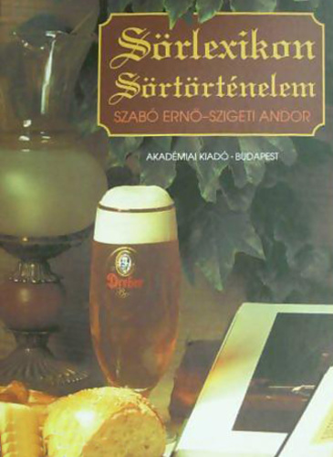
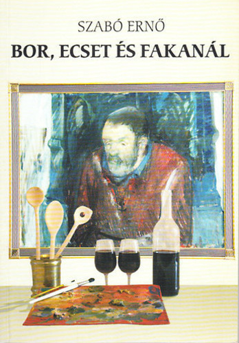
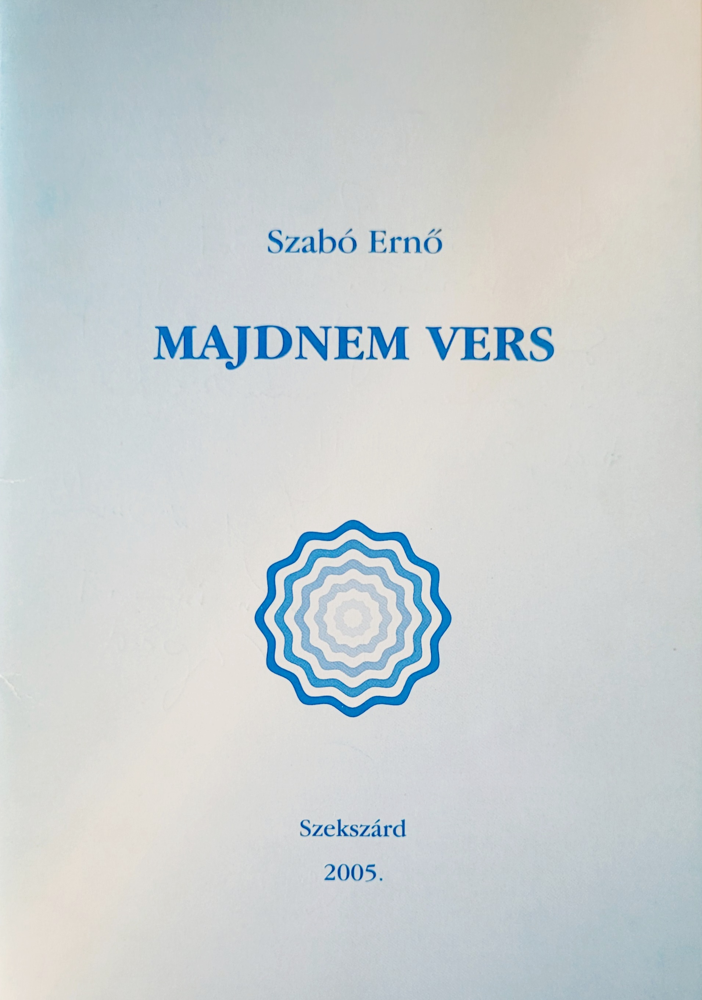
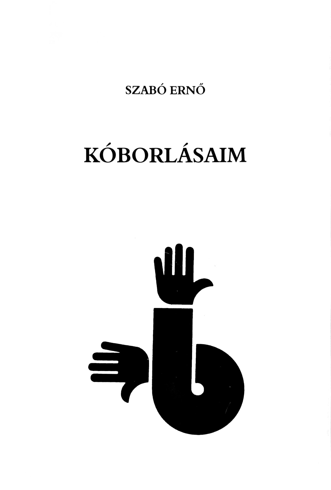
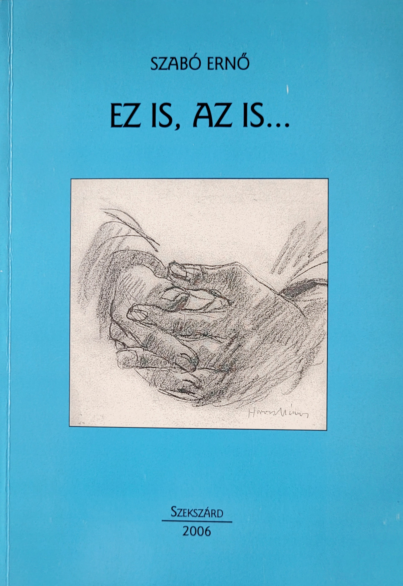
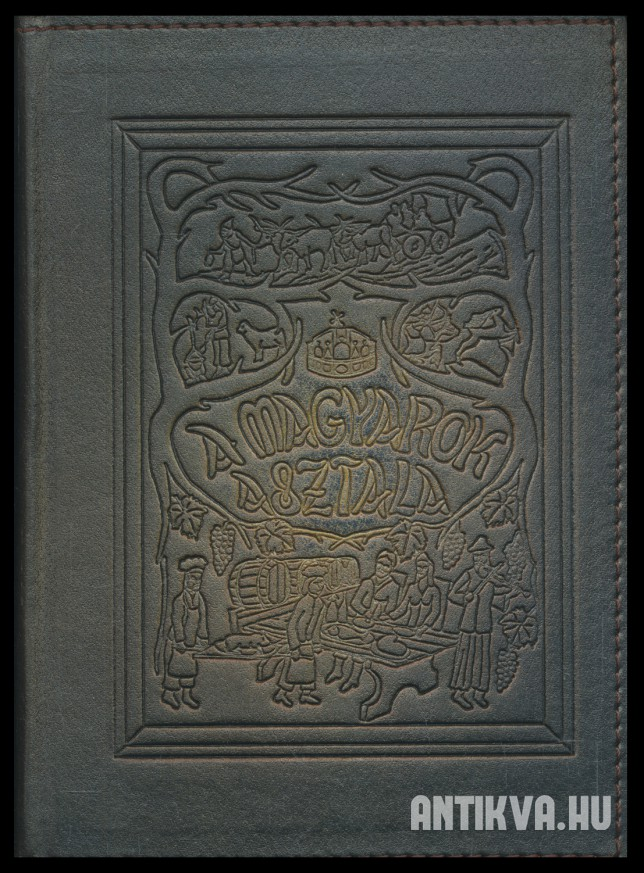

Bibliográfia

Az ördög kilencz kérdése
Rébusz Egyesület, 1988
52 oldal · ISBN: 9630193949

dr. Borda József, Sándor László, Szabó Ernő, Szigeti Andor: Gasztronómiai lexikon
Mezőgazda Kiadó, Budapest, 1993
496 oldal · keménytáblás · ISBN: 9638160713

Szabó Ernő - Szigeti Andor: A nagy kínai szakácsiskola
Novorg kft., Budapest
492 oldal · keménytáblás · ISBN: 2399989909700

Szabó Ernő - Szigeti Andor: Sörlexikon - Sörtörténelem
Akadémiai, Budapest, 1996
402 oldal · keménytáblás · ISBN: 9630573075

Szabó Ernő: Bor, ecset és fakanál
Tolna Megyei Ínyenc Klub, Szekszárd, 2002
240 oldal · puhatáblás · ISBN: 9632024443

Szabó Ernő: Majdnem vers
Szekszárd, 2005
22 oldal · pamphlet / füzet · ISBN: 2399972564121

Szabó Ernő: Kóborlásaim
Szekszárd, 2005
98 oldal · pamphlet / füzet

Szabó Ernő: Ez is, az is...
Szekszárd, 2006
144 oldal · puhatáblás

2005-ben közreműködött a Magyarok Asztala Kódex összeállításában